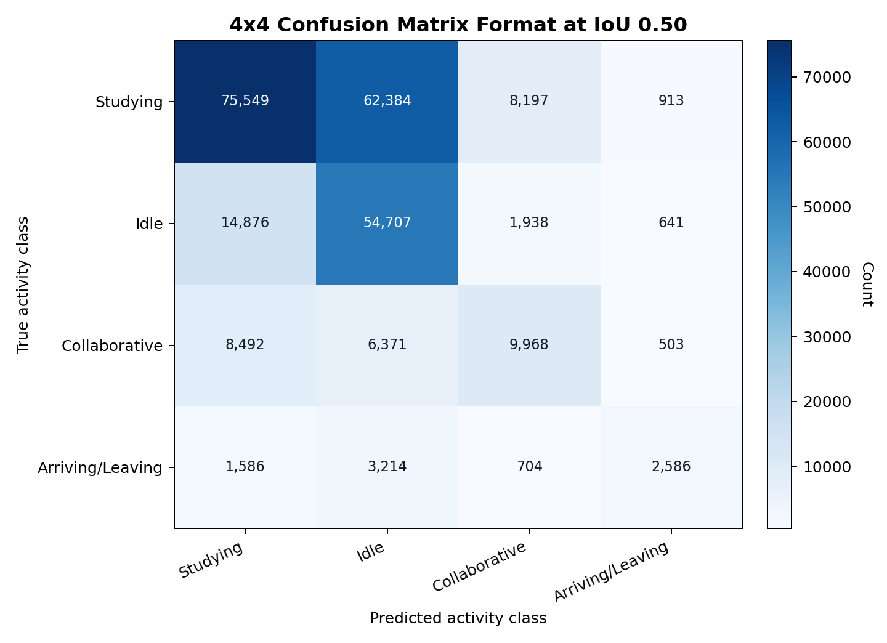
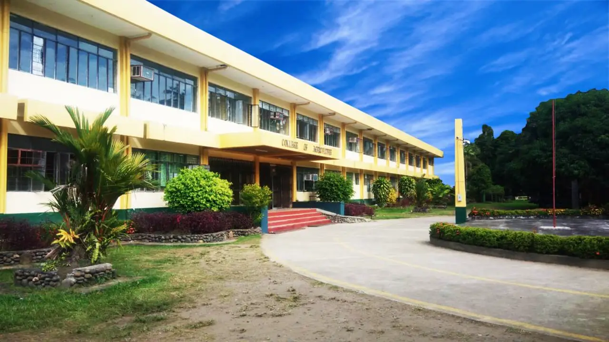
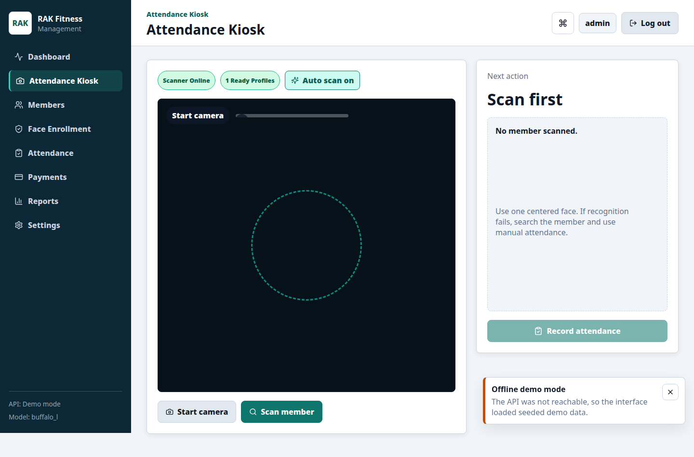
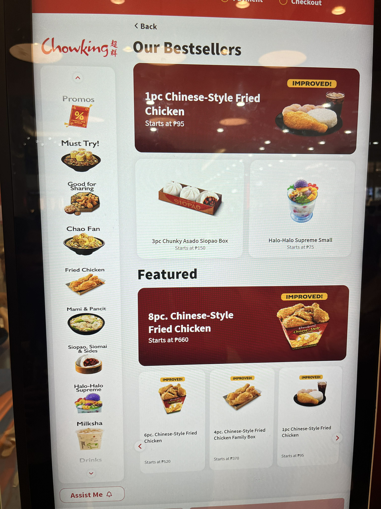

ClassVision thesis workflow
I worked across dataset preparation, class definition, CVAT labeling policy, data cleaning, by-video splitting, YOWOv2 fine-tuning, inference review, and defense-ready documentation.
BS Computer Science - Full-stack Developer - Computer Vision
I am Russel Jhon C. Buisan, a Computer Science major at the University of Southern Mindanao. My work combines full-stack development, computer vision, secure workflows, technical documentation, and project presentation for academic and practical use cases that need to be explained and defended.

Dataset preparation, CVAT annotation policy, YOWOv2 fine-tuning workflow, evaluation figures, and defense materials.
React, Next.js, Laravel, FastAPI, Django, ASP.NET Core, PostgreSQL, Redis, Docker, APIs, and admin dashboards.
RBAC, CSRF, encrypted data, audit logs, authorized pentest workflow, biometric consent, and privacy boundaries.
About Me
My projects cover a YOWOv2 classroom activity-detection thesis, a gym face-attendance system, a Cheen Tea kiosk/POS system, a secure thesis defense scheduler, the USM Agapay service desk, a CTF platform, API labs, and a structured university pentest workspace.
I do not only stop at code. I prepare documentation, workflow diagrams, evaluation figures, presentation clips, presentation decks, setup notes, instructions, and reports so the work can be explained, reviewed, and defended.
Selected Projects
This section highlights the work I can explain clearly: what each project does, what I built, the stack I used, and the outputs I can discuss during an interview.
Showing 9 projects

Privacy-conscious classroom video analytics framework for detecting visible activity context: studying, idle, collaborative, and arriving/leaving. The project includes classroom CCTV clip preparation, annotation policy, dataset validation, YOWOv2 fine-tuning workflow, inference post-processing, evaluation figures, and web-based monitoring design.

A secure academic scheduling system for students, faculty, Department Research Coordinators, college admins, and global admins.

A gym operations system with members, plans, payments, attendance, enrollment, reports, and local face-based time-in/time-out.

Tea-shop kiosk and POS platform with customer ordering, cashier views, kitchen boards, admin screens, loyalty rewards, QR registration, and voice-order processing.
University service-ticket platform with role-based access, offices, services, staff queues, ticket activity, notifications, evaluations, ARTA metrics, reports, and audit logs.
Full-stack CTF platform with Next.js frontend, Laravel authentication/user management, FastAPI challenge service, real-time scoring, Docker Compose, PostgreSQL, Redis, and admin tooling.
Structured workspace for approved security research with scope, methodology, Burp projects, Ghidra tools, findings, threat intelligence, PoC safety notes, reporting, and remediation handoff.
Python examples and explanations for Genetic Algorithms, Markov Decision Processes, and Particle Swarm Optimization using only the standard library.
ASP.NET Core 7 REST API lab using controllers, DTOs, EF Core migrations, SQLite persistence, Swagger/OpenAPI, and a student data model.
Detailed Portfolio Notes
These notes explain what I handled in each project beyond writing code.
I worked across dataset preparation, class definition, CVAT labeling policy, data cleaning, by-video splitting, YOWOv2 fine-tuning, inference review, and defense-ready documentation.
I built around role boundaries and secure data handling: cookie-based JWTs, refresh rotation, signed CSRF tokens, encrypted sensitive fields, audit logs, admin scoping, and controlled PDF generation.
The gym and kiosk projects cover enrollment, payments, attendance, reporting, product modifiers, kitchen queues, cashier views, loyalty rewards, and customer-facing ordering.
I prepared thesis drafts, methodology guides, intelligent-system reports, figures, defense presentation clips, contact sheets, PowerPoint scripts, and project notes.
Skills
These are the skills I used across the projects on this portfolio.
React, Next.js, Vite, TypeScript, Tailwind CSS, dashboards, kiosk UI, admin screens, responsive layouts.
FastAPI, Laravel, Django, ASP.NET Core, REST APIs, auth flows, services, schemas, controllers, migrations.
YOWOv2 workflow, CVAT labels, dataset preparation, checkpoint documentation, inference post-processing, InsightFace embeddings.
PostgreSQL, SQLite, Redis, Docker Compose, Alembic, SQLAlchemy, EF Core, seed scripts, local services.
RBAC, JWT cookies, CSRF, bcrypt, AES-GCM, audit logs, rate limiting, authorized pentest workflow.
Thesis manuscript drafting, methodology guides, evaluation figures, defense slides, technical reports, and project notes.
BSCS Thesis
My thesis develops a privacy-conscious computer vision framework for classroom activity-context monitoring. It avoids face recognition and identity profiling, and focuses on activity-level and room-level interpretation.
Classroom CCTV clips, frame extraction, annotation policy, CVAT export, cleaning, validation, and by-video splitting.
YOWOv2 medium fine-tuning with 16-frame clips, checkpoint selection, inference, filtering, and duplicate suppression.
Accepted detections are converted into room activity summaries rather than identity-based student records.
Evaluation figures, manuscript sections, defense presentation clips, contact sheets, and slide generation.
CV and Links